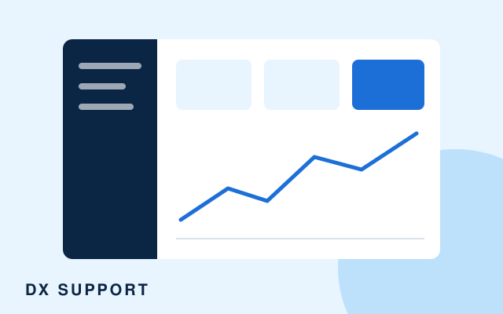

業務の棚卸し・課題整理
現場担当者へのヒアリングをもとに業務フローを図解し、ムダや属人化しているポイントを洗い出します。

DXと聞くと大がかりなシステム刷新を想像しがちですが、本当に大切なのは「現場の人が使い続けられること」です。ノースリンクは、まず日々の業務を一緒に棚卸しし、効果が出やすく負担の少ないところからデジタル化を進めます。
既存のクラウドツールの組み合わせで解決できることは無理に開発せず、必要な部分だけを開発する。費用対効果を重視した、中小企業に寄り添うDX支援です。

現場担当者へのヒアリングをもとに業務フローを図解し、ムダや属人化しているポイントを洗い出します。
特定の製品に縛られず、予算と業務に合ったツールを比較・選定。初期設定やデータ移行も代行します。
既存ツールで対応できない業務には、必要な機能に絞った小さなシステムを開発。将来の拡張も見据えて設計します。
操作マニュアルの作成や社内勉強会を実施。導入後3か月間は定例ミーティングで活用状況を確認します。
お困りごとを伺い、支援の方向性をご提案します。
現場ヒアリングで業務フローと課題を可視化します。
優先順位と費用対効果をもとに計画を立てます。
ツール設定や開発を行い、小さく試して検証します。
研修と定例会で、現場への定着を支援します。
支援範囲や期間により変動します。初回のご相談は無料です。
| 業務診断 | 20万円〜／ヒアリング・業務フロー図・改善レポート |
|---|---|
| ツール導入支援 | 50万円〜／選定・初期設定・データ移行・操作研修 |
| 業務システム開発 | 150万円〜／要件定義・設計・開発・テスト |
| 伴走サポート | 月額5万円〜／定例ミーティング・改善提案・問い合わせ対応 |
Webサイトの新規制作・リニューアル、業務のデジタル化など、まだ構想段階のご相談も歓迎です。